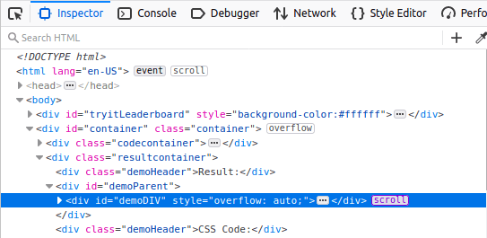
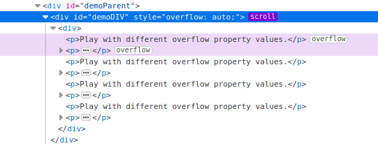
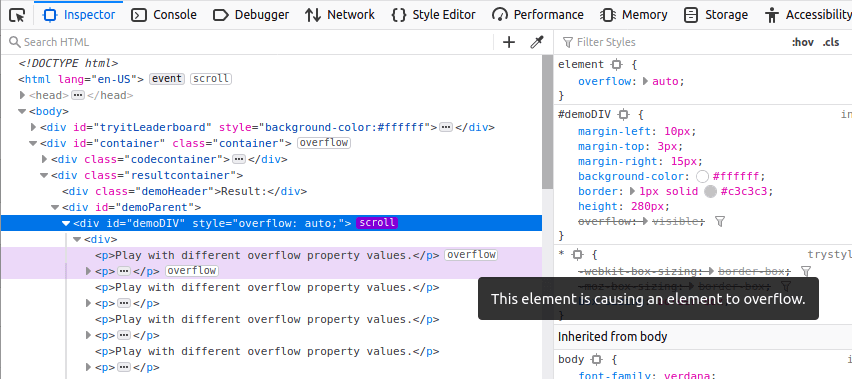

A scroll container is created by applying overflow: scroll to a container, or overflow: auto when there is enough content to cause overflow. The Firefox DevTools make it easy to discover both scrollable elements and any elements that are causing overflow.
In the HTML Pane, a scrollable element has the scroll badge next to it, as shown in the following image:

You can toggle the scroll badge to highlight elements causing an overflow, expanding nodes as needed to make the nodes visible:

You will also see an overflow badge next to the node causing the overflow.
